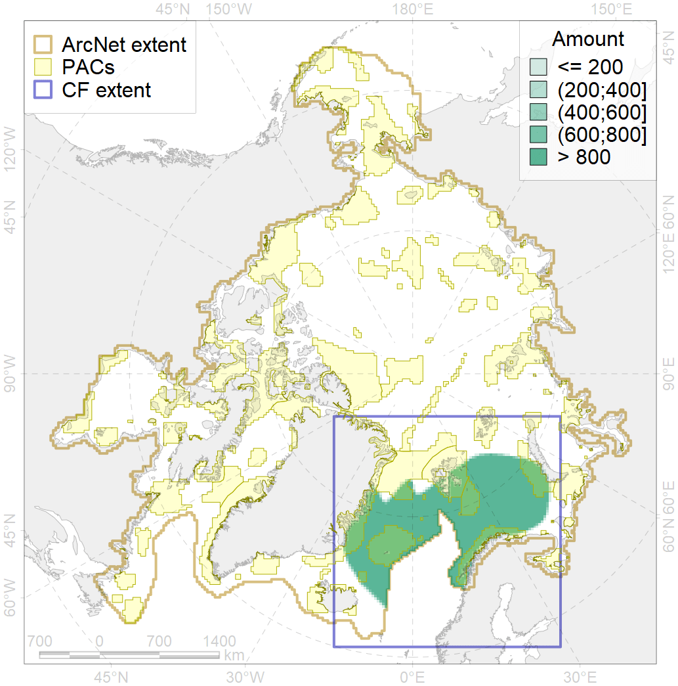
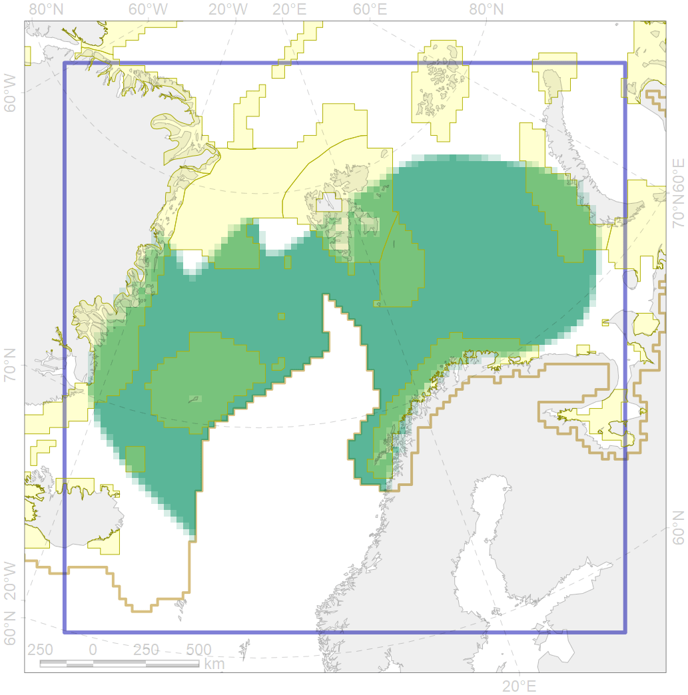

6004

| CF code | 6004 |
| CF name | Little Auk (Alle alle polaris) wintering grounds |
| Time Period | 2014-2017 |
| Source(s) | http://seatrack.seapop.no/map/ |
| Seasonality | October-April |
| Depth Horizon | >0 m |
| Methodology | Field Data |
| Use Restrictions | Open source |
| Author Name | Gavrilo, Tertitski |
| Notes | |
| Scenario’s Target | 0.18 |
| Target Achievement | 0.322 (Scenario: 179.0%) |
| PAC | Share of the Total Amount within the PAC | Share of the Target Achievement for the ArcNet | PAC’s Contribution to the Target Achievement |
|---|---|---|---|
| 21 | 4.1%4.1% | 19.7%19.7% | 11.0%11.0% |
| 27 | 4.5%5.1% | 22.4%23.5% | 12.5%13.1% |
| 29 | 1.6%1.7% | 8.3%8.5% | 4.6%4.7% |
| 30 | 3.6%3.8% | 19.2%20.5% | 10.7%11.4% |
| 31 | 3.3%3.6% | 17.1%18.4% | 9.5%10.3% |
| 32 | 4.7%4.7% | 24.6%24.8% | 13.7%13.8% |
| 34 | 8.4%8.8% | 41.1%41.6% | 23.0%23.3% |
| 35 | 0.3%0.3% | 1.4%1.5% | 0.8%0.8% |
| 36 | 0.5%0.6% | 2.2%2.3% | 1.2%1.3% |
| inner | 31.1%32.8% | 156.0%160.8% | 87.2%89.8% |
| outer | 68.9%70.8% | 23.0%30.7% | 12.8%17.2% |
| † supplement values are for area consistence whereas principal values are for Accenter compatible gridded stats |